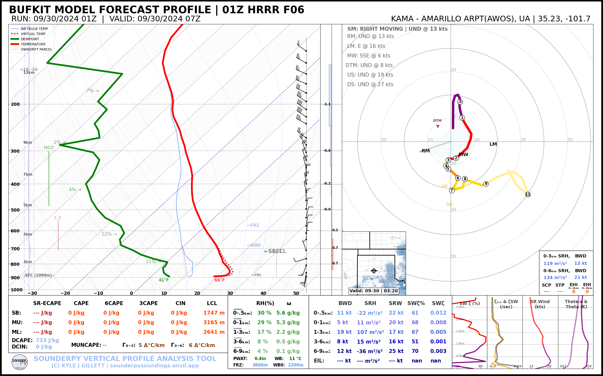

Plotting Soundings with BUFKIT Forecast Model Data
[1]:
# first, import sounderpy! Its fun to import as 'spy'!
import sounderpy as spy
## ---------------------------------- SOUNDERPY ----------------------------------- ##
## Vertical Profile Data Retrieval and Analysis Tool For Python ##
## v3.0.2 | Mar. 2024 | (C) Kyle J Gillett ##
## Docs: https://kylejgillett.github.io/sounderpy/ ##
## --------------------- THANK YOU FOR USING THIS PACKAGE! ------------------------ ##
Understanding SounderPy Functionality
To get model forecast data via BUFKIT, we need to use the ``get_bufkit_data()`` function
Reading the documentation on BUFKIT data access may prove useful before using this notebook: https://kylejgillett.github.io/sounderpy/gettingdata.html#model-forecast-data-bufkit
[5]:
################################ THE FUNCTION ###################################
# to get bufkit data, we need to use the `get_bufkit_data()` function
# `get_bufkit_data(model, station, fcst_hr, run_year, run_month, run_day, run_hour)`
################################################################################
########################## TYPES OF BUFKIT DATA ################################
# we can access archived model forecasts from the GFS, NAM, RAP & HRRR
# or most recent run forecasts from the GFS, NAM, NAMNEST, RAP, HRRR, SREF, & HIRESW
################################################################################
########################## WHERE DATA IS AVAILABLE #############################
# NOTE: bufkit forecast data is *only available at specific BUFKIT site locations*
# you can find them here: http://www.meteo.psu.edu/bufkit/DomainNAMRAP_NAM_12.html
################################################################################
############################# LETS GET SOME DATA ###############################
# to get archived forecasts we need every kwarg. (a kwarg is a Keyword Argument, like 'year', and 'station')
# the line below will get us a 12z GFS forecast from 08/05/2023 at forecast hour 6 for bufkit site KMOP:
# clean_data = spy.get_bufkit_data('gfs', 'kmop', 6, '2023', '08', '05', '12')
# to get the most recent forecasts we use the same function, but we *don't need a year, month, day or hour kwarg!*
# you just need a model, station and forecast hour.
# this will get you the most recent HRRR run, at forecast hour 6, for
# site `KAMA` (AMARILLO ARPT(AWOS)):
clean_data = spy.get_bufkit_data('hrrr', 'kama', 6)
> BUFKIT DATA ACCESS FUNCTION --
---------------------------------
> COMPLETE --------
> RUNTIME: 00:00:00
> SUMMARY: 14Z HRRR F06 for KAMA, AMARILLO ARPT(AWOS) at 03-18-2024-20Z
> THERMODYNAMICS ---------------------------------------------
--- SBCAPE: 0.0 | MUCAPE: 0.0 | MLCAPE: 0.0 | MUECAPE: --
--- MU 0-3: 0.0 | MU 0-6: 0.0 | SB 0-3: 0.0 | SB 0-6: 0.0
> KINEMATICS -------------------------------------------------
--- 0-500 SRW: 18.2 knot | 0-500 SWV: 0.001 | 0-500 SHEAR: 1.0 | 0-500 SRH: -2.8
--- 1-3km SRW: 14.0 knot | 1-3km SWV: 0.002 | 1-3km SHEAR: 11.2 | | 1-3km SRH: 21.7
==============================================================
[6]:
# Lets check out the BUFKIT data that we just accessed
# and stored in the `clean_data` variable:
# `clean_data` is a python dictionary of 'clean' vertical profile data
# it comes with temperature, dewpoint, pressure, height, u and v
# as well as a number of useful 'meta data'
clean_data
[6]:
{'p': array([898. , 895.3, 890.5, 882.2, 869.9, 854.3, 835.8, 815.7, 794.2,
770.3, 744.1, 715.6, 684.9, 651.8, 616.3, 578.3, 538.1, 498.7,
462.7, 430.1, 400.4, 373. , 348. , 325.2, 304.4, 285.5, 268.2,
252. , 237.2, 223.5, 209.6, 195.8, 181.9, 168. , 154.1, 140.2,
126.3, 112.4, 98.6, 85.7, 75.3, 66.9, 59.1]) <Unit('hectopascal')>,
'z': array([ 1108.29, 1133.52, 1178.47, 1256.56, 1373.17, 1522.7 ,
1702.5 , 1901.07, 2117.35, 2362.91, 2638.8 , 2947.67,
3292.62, 3680.88, 4117.03, 4607.8 , 5156.26, 5726.26,
6278.8 , 6808.06, 7316.84, 7812.46, 8291.23, 8753.89,
9200.06, 9627.02, 10037.34, 10440.57, 10827.59, 11204.62,
11608.91, 12035.84, 12497.21, 12996.8 , 13541.82, 14140.62,
14801.68, 15535.12, 16350.87, 17216.49, 18010.6 , 18735.25,
19494.56]) <Unit('meter')>,
'T': array([ 1.294e+01, 1.224e+01, 1.174e+01, 1.074e+01, 9.440e+00,
7.840e+00, 6.040e+00, 4.040e+00, 1.940e+00, -6.000e-02,
-2.360e+00, -4.360e+00, -5.060e+00, -6.160e+00, -8.360e+00,
-1.126e+01, -1.506e+01, -1.916e+01, -2.336e+01, -2.806e+01,
-3.246e+01, -3.616e+01, -3.866e+01, -4.116e+01, -4.396e+01,
-4.726e+01, -5.056e+01, -5.356e+01, -5.586e+01, -5.746e+01,
-5.866e+01, -5.936e+01, -5.886e+01, -5.806e+01, -5.706e+01,
-5.646e+01, -5.726e+01, -5.926e+01, -6.156e+01, -6.296e+01,
-6.396e+01, -6.376e+01, -6.406e+01]) <Unit('degree_Celsius')>,
'Td': array([ -5.46, -5.54, -5.61, -5.73, -5.96, -6.2 , -6.53,
-6.89, -7.33, -8.49, -9.48, -11.74, -16.06, -20.84,
-25.41, -31.23, -37.29, -40.29, -42.33, -45.08, -50.82,
-53.56, -54.14, -59.23, -65.03, -65.5 , -65.96, -66.42,
-66.86, -67.29, -72.59, -73.05, -73.54, -100.08, -100.49,
-100.94, -101.43, -101.98, -102.58, -103.23, -103.82, -104.35,
-104.91]) <Unit('degree_Celsius')>,
'u': array([-0.38845117, -0.38857584, -0.38857584, -0.38929235, -0.38818847,
-0.1941547 , -0.1941547 , -0.1941547 , -0.1941547 , -0.1941547 ,
-0.19472446, -0. , 1.94326151, 7.97102068, 10.88391095,
12.83068595, 12.24633419, 9.52602731, 6.41328371, 5.05718433,
10.10967483, 19.44038998, 33.63201528, 47.43056346, 58.50940485,
60.06488478, 57.73397035, 55.01282569, 53.45780405, 50.73663366,
47.42563566, 47.23232619, 48.21079087, 49.18181545, 49.369603 ,
45.68109022, 39.84667397, 36.34793992, 34.98404744, 34.40944083,
31.88009819, 32.85414923, 30.90755948]) <Unit('knot')>,
'v': array([ -6.7989121 , -7.38979085, -7.38979085, -7.58000999,
-7.7703095 , -7.777577 , -7.777577 , -7.777577 ,
-7.777577 , -7.777577 , -7.96762087, -9.14 ,
-11.27374537, -8.94333435, -9.910544 , -9.52543427,
-8.74813117, -5.83298411, -2.13714577, -1.16661334,
-1.74987851, -2.72178938, 2.1395206 , 1.35799487,
1.55256051, 2.32845795, 1.36057642, 2.71945034,
3.30708117, 0.58446992, 1.16733988, 2.33483672,
1.94477339, 3.68936702, 5.6336844 , 3.69146264,
1.36362504, -0.38699327, 3.30696613, 3.11333933,
2.52581461, 3.49949687, 0.38841629]) <Unit('knot')>,
'site_info': {'site-id': 'KAMA',
'site-name': 'AMARILLO ARPT(AWOS)',
'site-lctn': 'UA',
'site-latlon': [35.23, -101.7],
'site-elv': 1099,
'source': 'BUFKIT FORECAST PROFILE',
'model': 'HRRR',
'fcst-hour': 'F06',
'run-time': ['2024', '03', '18', '14'],
'valid-time': ['2024', '03', '18', '20']}}
LETS PLOT THE DATA ON A SOUNDING AND HODOGRAPH
[7]:
# lets make a sounding!
spy.build_sounding(clean_data)
> SOUNDING PLOTTER FUNCTION --
---------------------------------
> COMPLETE --------
> RUNTIME: 00:00:01

[ ]: